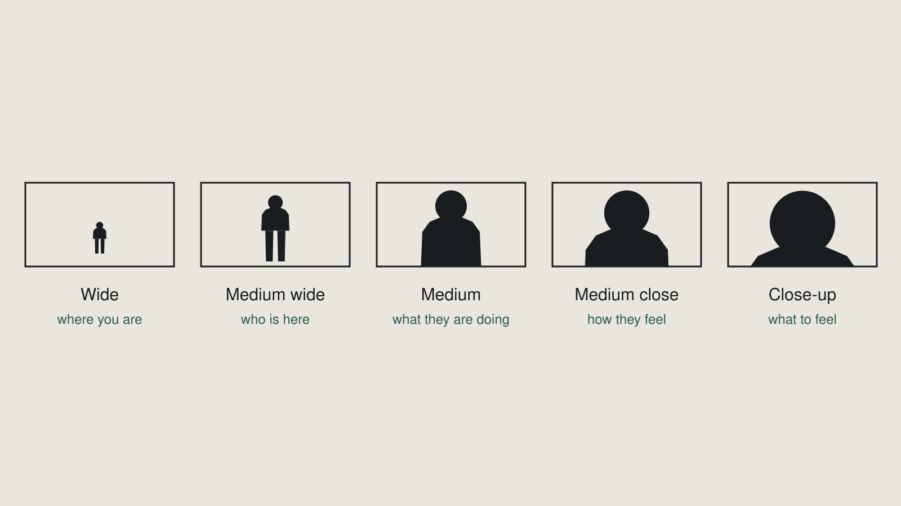

Week 7 slidesCamera and shot grammar
What was on screen in class. Arrow keys or click to move.
1 / 17
Title
Week 7 — Camera and shot grammar
The hardest module in the course starts here.
2 / 17
The sequence, at speed
Blank.
Shown in class.
3 / 17
The sequence, cut by cut
Blank.
Shown in class.
4 / 17
Outcomes
By the end of this week you can
- Configure a camera for video — frame rate, shutter, resolution — and say why each value
- Name shot sizes and state what each one does for a viewer
- Shoot a sequence that reads without dialogue
- Decide when camera movement serves the shot and when it only announces itself
5 / 17
Every size has a job.

6 / 17
The least decision
The medium shot is the least decision.
Far enough to include everything. Close enough to see a face. Safe.
Five of them in a row is a default, not a choice.
7 / 17
Two different numbers
Frame rate ≠ shutter
Frame rate — how many images per second
Shutter — how long each one is exposed
8 / 17
Same frame rate. Different shutter.
Blank.
Shown in class.
9 / 17
Rule or reason?
"Because it's the standard"
is a rule.
"Because I want the motion to look natural rather than stuttered"
is a reason.
10 / 17
Resolution
Resolution is the quick one.
Set it deliberately. Write it down.
Week 9 exports to a specification, and your sequence has to match your footage.
11 / 17
Coverage
Cutting wide → close says look at this.
Cutting close → wide says and here is where that was.
The change is the meaning. Nothing in the world has to move.
12 / 17
Two moves
Blank.
Shown in class.
13 / 17
Which one revealed something?
Which move revealed something?
And what was it?
14 / 17
The default position
A locked-off tripod shot is a decision.
A drifting handheld shot usually is not.
Argue with this — by naming what your move revealed.
15 / 17
No auto mode
Remember the week 2 survey?
Manual mode · white balance · ISO
Named, explained, not assessed. This is the week that ends.
16 / 17
Today I watch each of you
Today I watch each of you configure a camera.
Unaided. Before anyone shoots.
This is the only time it happens all term.
17 / 17
Sound off
We screen with the sound off.
If the room cannot tell what happened, it did not read.